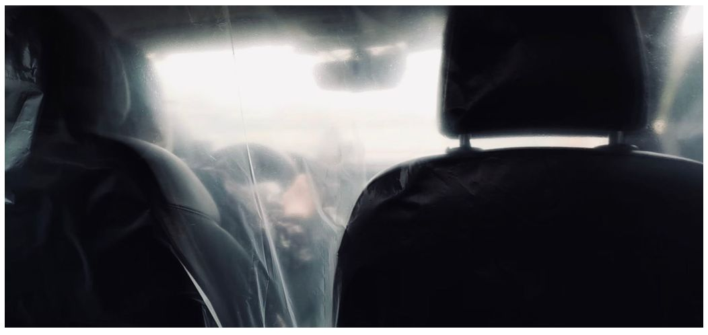
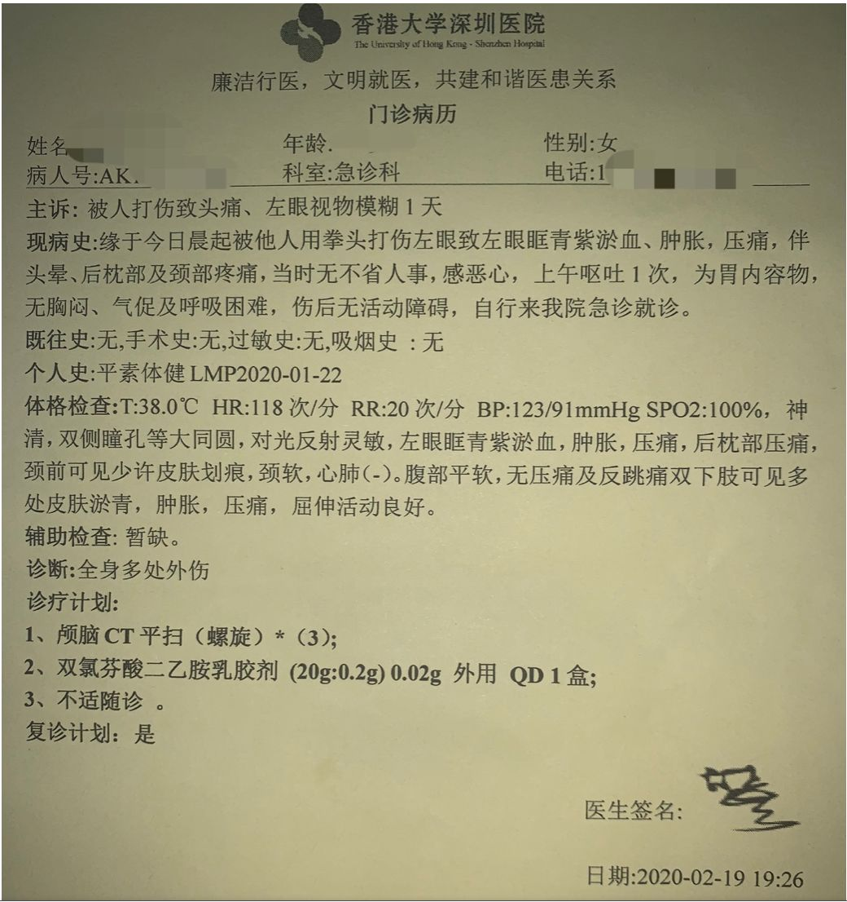
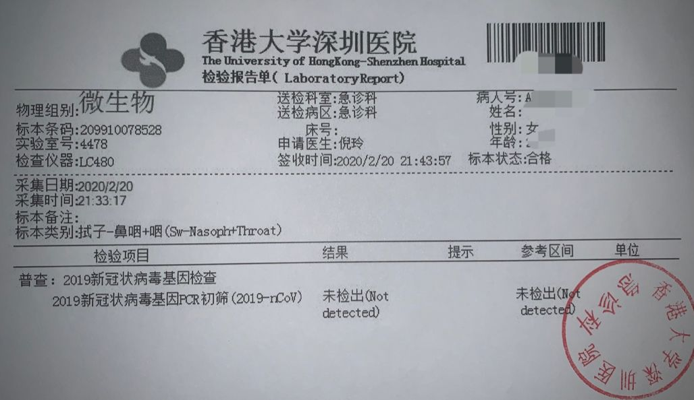
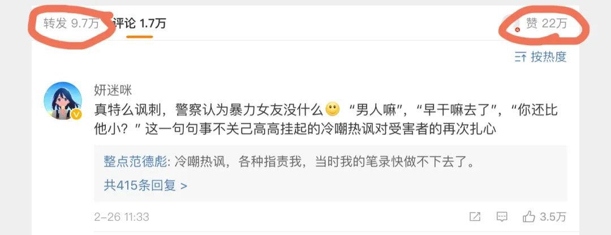
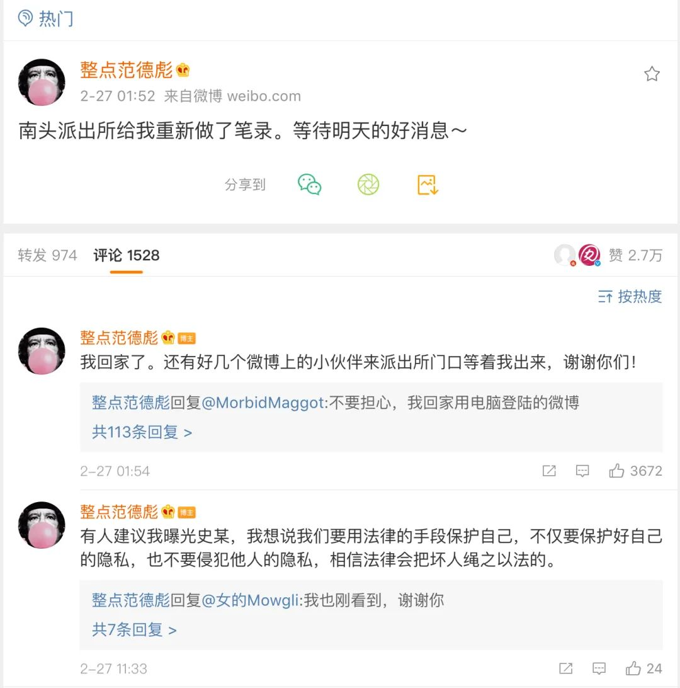
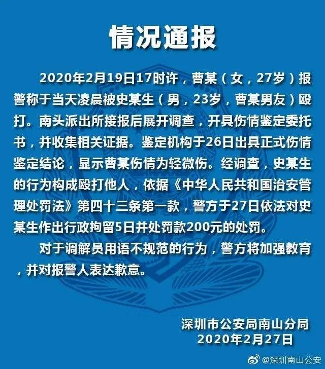

在武汉，我为医务人员剪头发
原文链接 备份链接 沈杰把为医务人员理发的短视频上传到社交网络，获得了两种意料之外的回应：一种说他“胆子大”，“这种时候还敢到医院去”，另外一种，则是更多医务人员请他帮忙。 对他而言，自己只是偶然接到了一个医生的电话，了解对方困境后没犹 …
@整点范德彪 是一个普通的女孩，因劝当时的男友史某不要外出聚众喝酒，却遭到史某的暴打和死亡威胁。
她趁史某睡着逃出史某的家，前往派出所报案。
疫情期间维-权变得更加复杂，没想到在派出所还遭受了调解员冷嘲热讽和指责，说她要毁了史某，暗示遭受暴力是她的错。
她在微博给我私信留言求助，我鼓励她将这段遭遇写出来。
以下是当事人的部分录音视频和微博全文：
逃离
“上班去呀？辛苦了。”2月19日清晨7点，门岗对着我的额头测体温，他并没有发现我口罩下隐藏的伤口。我用尽力气发出一声嗯。想回复一句你也辛苦了，喉咙却像被人锁死了一样发不出声音。
我的喉咙确实被人锁住了，就在几个小时前的男朋友家中。脖子被人掐住像垃圾袋一样提起不断地撞击墙壁，后脑勺仿佛与身体分离。
走出小区门口回望，他没追来，我逃出来了，我想。这应该是我等过得最漫长的滴滴，我生怕慢一秒他就追出来，又把我拉入身后的地狱。车来了，司机师傅谨慎地用塑料膜把前后隔开，我从后排望去，前方的路朦朦胧胧，也许是眼泪吧。

我从史某家逃出2月19日
报警
“他的工作这么好，你这样会毁了人家……“接待我的警察把我拉到门外，小声对我说。“男人嘛……”
我攥着刚刚写好的自述材料。不知道是被打得头痛还是什么，警察的话我一句也听不进去，眼泪却止不住的流出来。

我的自述材料2月19日
“我能打个电话给家里人吗？”
警察拔下口罩，吐出了嘴里的槟郎。“这点小事至于嘛？还用打电话？”我给好友拨了电话，“你先回家吧，不要再受警察的言语刺激了，我们咨询律师。”
走出派出所，警察把我叫住“美女，等等。“这个美女格外的刺耳，“下次再遇到这种，你第一时间要报警。”
我当时在做什么？赤身裸体地缩在墙角，不断地请求别打了，“信不信我杀了你“，后脑勺再次撞在墙上。
“咣。”
没有下次了。一定。
再次报警
因为复工，街上行人多了起来，大家都行色匆匆大概想赶紧回家吧，家是安全的，家人是温暖的。这是我在深圳独自过的第一个年。大年三十晚上给父母打电话拜年。买了好多速冻水饺，香肠，面条，饮用水，都是我一次次地提上七楼的。看着冰箱塞得满满，还囤了三箱螺蛳粉，自以为拥有了整个世界。虽然口罩没几个，但是远在北京的朋友给我寄了一大包。“自己要照顾好自己呀。”这张小纸条差点儿被我丢掉。
我拖着伤痕累累的身体走到家门口，看到街对面的派出所，再去试试吧。
警察无奈地对我说，事发地不是他们的辖区，他们也管不了。想起第一个警察，我眼泪又止不住了，“可是那个派出所的警察态度好差，他好像不愿意管这种事情。“有个警察忙递了一张纸巾。我有点失望，起身想走，警察要我赶紧去医院急诊科，好让法医做鉴定。
医院

被打当天的急症病例2月19日
疫情之下，医院好像是最恐怖的地方。这些天网上流传着很多医院的照片。有人穿着玩偶服，有人在塑料布下打着伞。我从派出所出来，急忙找离家近又没有发热门诊的医院。打电话过去，这家医院不能看全科，医生说你得去港大医院。
看来只能硬着头皮去港大医院了。
没想到医院也有这么冷清的时候，停车场只有三三两两的车，急诊科被分割成一间间的小病房，我匆匆走过发热门诊，只看到医生戴的护目镜反光。
来到医生的小隔间，戴医生没有戴手套，也没有戴护目镜，像平时一样只有一个医用口罩。我稍稍没有刚来时那么紧张了。戴医生得知我是被男友打的后，“你报警了吗。”他边说边检查我的眼睛。
报了呀。我在脑海里回复他，却张不开口。
在检查完头部后，“去做个颅脑CT吧”，戴医生说。
我坐在等候室等待颅脑CT的结果，“你的口罩湿了，换一个吧”，原来是我的泪水早已把口罩打湿，我默默接过口罩，看到值班护士带着笑意的眼睛一闪闪，真好看。医院，真的是疫情之下最危险的地方吗？
从医院回家已经夜里十点，好友帮我联系律师，写了一封控告书。我看着控告书里满页的“控告人“和”被控告人”发呆，明明就在昨天还是恋人呢。
第二次去南头派出所

鉴定委托书2月20日
如今找到打印店竟然变成一件难事。小区附近的全关门了，我打开大众点评，一家家地打过去，大多是无人接听。我迷茫的站在街头，往日热闹的街道不在了，只有快递员和外卖小哥匆忙赶路的身影。再试试吧，我心里暗想，终于找到了距离7公里的一家打印店。
我带着刚打印好的控告书和病例再次去了南头派出所。
第一次来时那个警察不在，另一个警察接待了我，大概了解情况后，给我开了伤情鉴定委托书。“去南山医院法医科做鉴定。然后周日再过来，三队值班。“
五分钟我从派出所出来了，却接到社区打来的电话。“你昨天是不是去过医院？”我承认，“医院多危险，你发烧啦吗？”我否定，“没有发烧就让医院给你开个证明你没事。”
再去医院
37.6度。分诊台的医生给我测完耳温，反复询问“你去过湖北吗？有湖北接触史吗……我心想完了，会不会隔离，我发烧了吗为什么没有感觉。如果隔离我的案子怎么办。脑子像炸了一样无数问题冒上来。
头和脚步同样沉重地去了发热门诊，发热门诊的医生和昨天急诊科的大不一样。防护服，护目罩，手套一个不少。医生在接过我的单子后，立刻按了两下旁边消毒液洗手。
先查血。
抽完血后恍恍惚惚，真的要被隔离了吗。已经快九点了，今天还没有吃饭。我开车去附近买了份麦当劳。这会不会是最后一顿麦当劳，坐在车里啃着汉堡看到飞驰过去的急救车我想。
一小时后拿到报告。只是有点着凉，医生也松了一口气。再做一个新冠病毒检测吧。
我怎么也不会想到，自己竟然要做新冠病毒检测。这些天在家看到的新闻一幕幕浮现在眼前，封-城，“人-传人”、李wl、确认人数、疑似病例、停课不停学、女医护人员被剃掉头发、山川异域风月同天……我们转发过，愤怒过，恐惧过，痛哭过的一切不只是网络的距离了。

新冠病毒检查2月20日
第三次去派出所
周日10点，我第三次去南头派出所，拿着这些天东奔西跑来的的控告书，病历证明，法医鉴定，心里有点底气了。
“这个没用”，还是那个警察，嚼着槟榔把我的控告书扔在一旁。他拆开我昨天去南山医院开的法医鉴定，是轻微伤。

南山医院法医科开的伤情鉴定2月21日
不一会儿史某被传唤到派出所，警察开始调解，我坚持说要求按照法律对他进行处罚。
“你们男女朋友一场，就算分手也是最熟悉的陌生人对不对”。他大声说，“你就是想毁了他，想弄死他！”我也大声回应：“我只想依法对他制裁，如果法律都保护不了我，还能找谁？”眼看调解不成，警察带我俩分别做笔录。
“那时候你就看出这个人那么冲动了，你还要跟他交往？”
“交往了多久你就去他家？”
“你早干嘛去了？”
“吵架你都没想着要走啊？”
（我在陈述史某说要打死我后）“他喝醉酒的话你也信？你就害怕了？”
“等着他打你你才想着走？前几天为什么不走？”
“假如我跟你喝酒，你不喝我就给你一巴掌或者打你，有没有？”
“他还比你小？”
我没有想到笔录是这样做的，警察不停打断我的话，一个接一个的反问句，使我很难讲出一句完整的话出来。窗外鸟叫声是那么的清晰悦耳，阳光是那么明媚灿烂，而我，却如同身在黑暗。
就在我写下这些的时候，史某还在向我求情。做完笔录那天我出来，只问了他一个问题，你还有没有打过其他女孩。他沉默了十几秒钟。
“打过。”

截止本文发稿时，这条微博被转发了十万多次，近两万条留言。网友们对女孩的遭遇非常同情，也对史某和调解员的行为气愤不已。
2月26日晚深圳南头派出所联系当事人到派出所重新做笔录。还有网友前去派出所外等候当事人。

2月27日深圳南山公安官方微博发布情况通报称将依法对史某做出行政拘留5日，并罚款200元处罚。对调解员用语不规范的行为将加强教育，并对报警人表达歉意。

反家暴法第十五条规定： 公安机关接到家庭暴力报案后应当及时出警，制止家庭暴力，按照有关规定调查取证，协助受害人就医、鉴定伤情。
无民事行为能力人、限制民事行为能力人因家庭暴力身体受到严重伤害、面临人身安全威胁或者处于无人照料等危险状态的，公安机关应当通知并协助民政部门将其安置到临时庇护场所、救助管理机构或者福利机构。
南头派出所的不仅没有按照规定保护当事人，调解员反而站在施暴者的立场上打压报案者。
史某受到的惩罚完全无法和女孩所受的的暴力相提并论，但这已经是近年来公安部门对相似案件比较积极的处理了，也算一个小小的进步。
@整点范德彪 说她将这些经历写出来一方面是想让公安可以依法办案，另一方面也想让大家到看一个女孩遇到这样的事情想保护自己的时候会经历什么。
感谢她勇敢的说出来，也感谢所有线上线下守护她的人。是大家一起的努力让改变发生。
阅读更多：
《疫期反家暴|听到邻居打骂小孩后，我给ta们写了一封信》

原文链接 备份链接 沈杰把为医务人员理发的短视频上传到社交网络，获得了两种意料之外的回应：一种说他“胆子大”，“这种时候还敢到医院去”，另外一种，则是更多医务人员请他帮忙。 对他而言，自己只是偶然接到了一个医生的电话，了解对方困境后没犹 …
原文链接 备份链接 杨普（化名）是湖北的一名民警，他所在的县级市距离武汉约50公里，有百万人口。在疫情尚未明朗前，当地曾有大量居民往返武汉，包括从武汉返乡过年的打工者。 当疫情爆发点和重灾区被锁定在武汉后，大量目光也随之被吸引而去。一旁的 …
原文链接 备份链接 原创 钟玄雅 真实故事计划 真实故事计划 4天前 武汉是世界上大学生最多的城市之一。新型冠状病毒肺炎疫情爆发后，一百余万大学生返乡，成为各地防止传染的重点防控隔离对象，遭遇着忧虑、歧视和隐私泄露。疫情给这群新鲜人上了社 …
原文链接 备份链接 1月21日下午，我们三人就住进了武汉金银潭的一家酒店，然后迅速开始了解情况。两位记者去华南海鲜市场摸情况，我一边做北京朝阳医院陶勇医生被伤事件的电话采访、赶微信稿，一边询问武汉的医生朋友。我们三人在酒店房间第一次碰面 …
原文链接 备份链接 1月23日，武汉市公共交通停运。一些本地的私家车主决定为医务人员护航，免费接送他们上下班，并运送救援物资到各大医院。34岁的车车便是其中一员。 文 | 吴美芬 从1月底开始，车车几乎跑遍了武汉每一个医院，为医护人员送 …